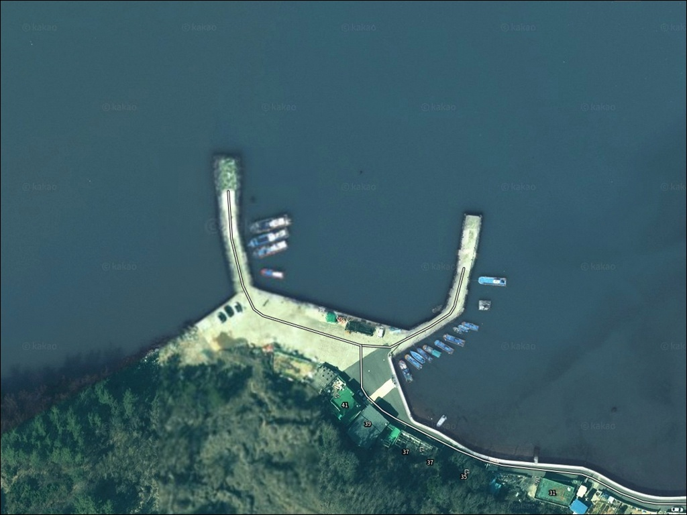
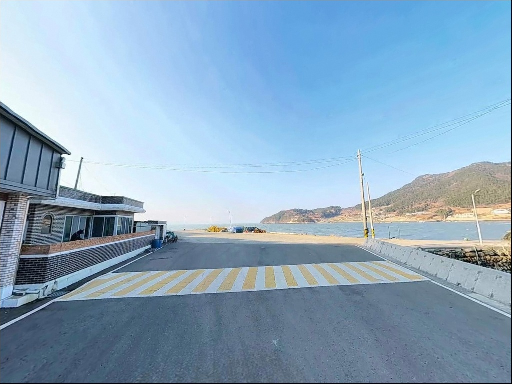
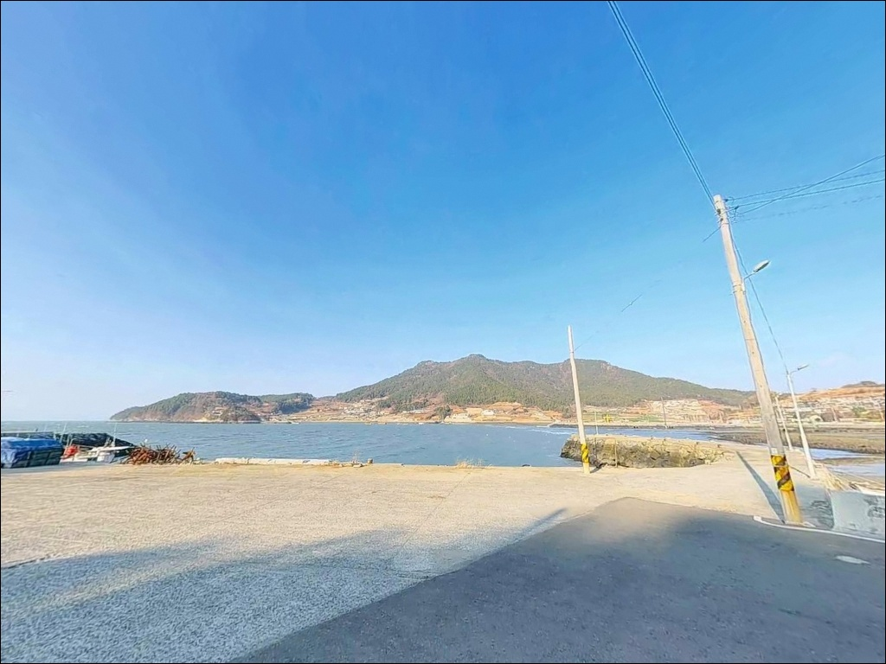
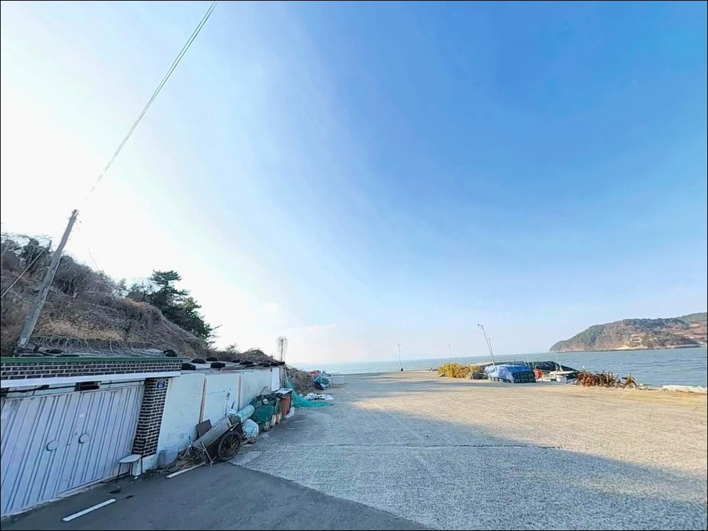
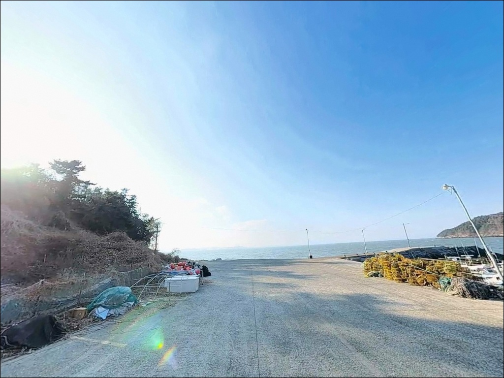
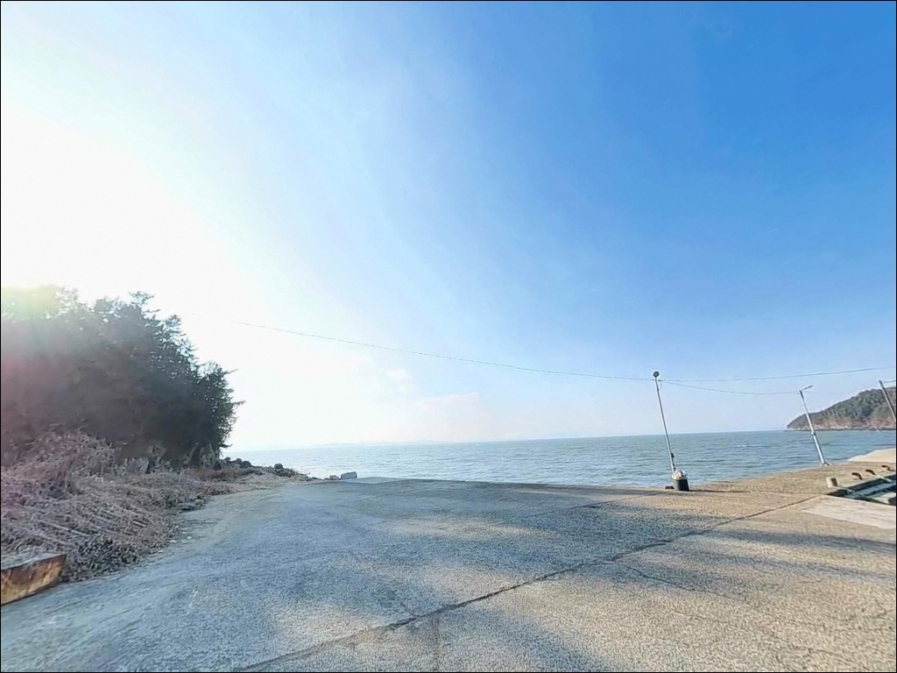
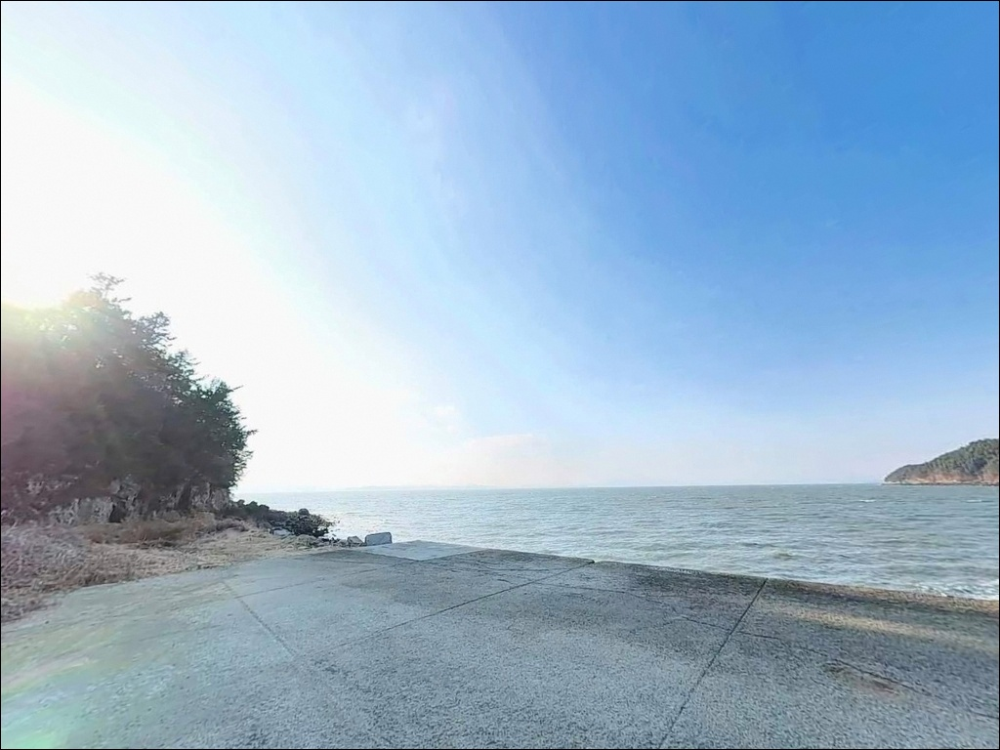
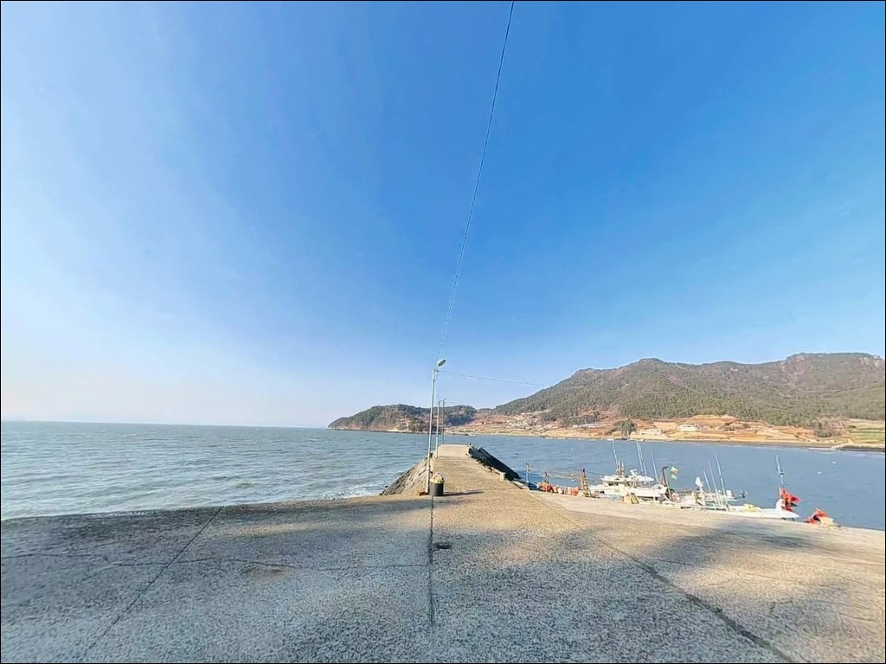
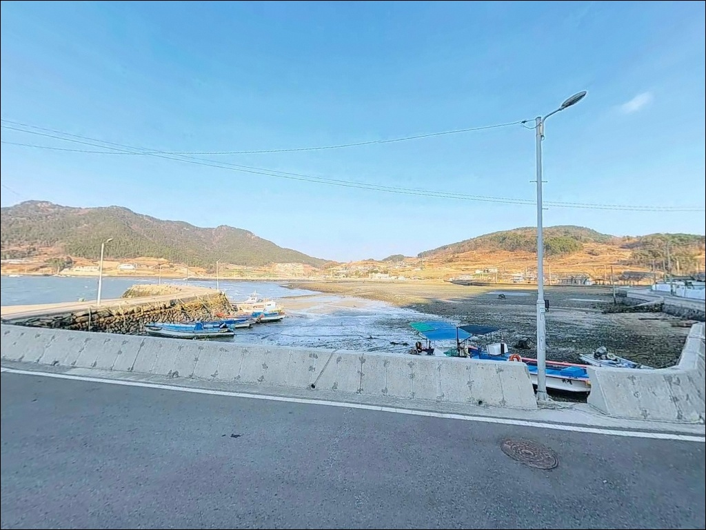

사리 때 채비 다 쓸려가는 여수 벌구방파제, 외항 수심 6m 지켜낸 조금 타이밍
이 페이지에는 광고(제휴 링크 포함)가 있으며, 광고 링크를 통해 구매하면 운영자가 판매 수익 또는 수수료를 받을 수 있습니다. 포인트 사진: 카카오맵 스카이뷰·로드뷰. 이 페이지의 지도·사진 이미지는 카카오맵의 실제 서비스 이미지와 다를 수 있습니다.


포인트 안내
벌구방파제
전남 여수시 화양면 이목리 1415-5
사리 전후 물때를 확인하지 않고 벌구방파제 외항에
자리를 잡으면, 조류가 너무 강해
어떤 채비를 써도 바닥을 잡기 어려워집니다.
이 방파제는 조류 흐름이 살아 있어 조과가 나오는 구간과,
조류가 세져 낚시 자체가 힘들어지는 구간이
물때에 따라 명확히 갈리는 구조입니다.
여수 화양면 이목리 해안에 자리한 벌구방파제는
어촌정주어항으로 등록된 방파제입니다.
남쪽으로 길게 뻗은 메인 방파제와
안쪽 보조 선착장이 결합된 구조로,
외항 수심 6~8m의 조류 통로를 품고 있어
원투낚시부터 찌낚시, 에깅까지 복수 스타일이
모두 자리를 잡을 수 있는 포인트입니다.
이 글은 벌구방파제의 진입 환경, 차박 여건,
물때 판단 기준, 낚시 스타일별 공략 조건에 집중합니다.
조황 단정이나 특정 어종 보장은
이 글의 범위에 포함되지 않습니다.

1. 진입 동선과 포인트 접근성
벌구방파제는 화양면 지방도에서
이목리 마을안길을 따라 해안 방향으로 내려가면
방파제 초입까지 차량 진입이 가능합니다.
도로는 포장 상태이며,
승용차와 일반 SUV가 교행 가능한
2차선 수준으로 연결됩니다.
단, 마을 안쪽 구간 일부는 폭이 좁아지는 구간이
포함되어 있어 초행이라면 천천히 진입하는 편이 좋습니다.
항 내 물량장은 넓게 확보되어 있어
대형 차량도 회차가 어렵지 않습니다.
방파제 시작 지점 좌우측으로
콘크리트 공터가 형성되어 있으며,
10대 이상 주차가 가능한 수준입니다.
낚시 자리와 주차 공간 거리가 가까운 것이
이 포인트의 실질적인 강점입니다.
방파제 끝단 일부는 유료 운영 구간으로 구분되며,
안내판 기준으로 낚시배 이용객은 무료,
일반 차량은 주차 요금이 적용됩니다.
진입 전 안내판을 먼저 확인하고
주차 위치를 결정하는 것이 기본입니다.

2. 차박 환경과 야간 체류 여건
벌구방파제는 물량장이 넓고
낚시 자리와 주차 공간 사이 거리가 짧아,
낚시와 차박을 함께 계획하는 방문자에게
실용적인 구조입니다.
선착장 주변에 가로등이 설치되어 있어
야간 이동과 낚시 준비에 조명을 확보할 수 있습니다.
방파제 뒤편으로 벌구마을 주택과
항구 시설이 이어져 있어,
완전히 외딴 포인트가 아니라
마을 생활권과 맞닿은 구조입니다.
야간 차량 통행은 비교적 적은 편이지만,
소음 관리와 쓰레기 수거는 기본 매너로 지켜야 합니다.
민가와 약간 거리가 있어 차박 시
프라이버시 확보는 가능한 편입니다.
방파제는 남쪽으로 열린 구조라
남서풍이 강한 날에는 방파제 외항 측에서
바람 영향을 직접 받을 수 있습니다.
기상 예보상 풍속이 강하게 예고된 경우에는
물량장 내항 쪽에 차량을 세우는 편이
실질적으로 더 안정적입니다.


3. 주변 편의시설 및 인프라 현황
벌구방파제 항구 입구 쪽에
공중화장실이 확인되어 있습니다.
마을 주민과 함께 사용하는 공용 시설이므로
청결 유지는 기본 매너입니다.
반경 1km 이내는 이목리 소규모 어촌 마을로,
편의점이나 식당을 기대하기 어렵습니다.
방파제 바로 옆에 자연산 활어를 취급하는
벌가횟집이 영업하고 있어
현지 식사 연계는 가능합니다.
대형 마트나 주유소는
화양면 소재지 방향으로 이동해야 접근 가능하므로,
식수·얼음·낚시 소품은 출발 전에 갖춰두는 편이 좋습니다.
반경 10km권으로 이동하면
백야대교 방면으로 화양면 농협 하나로마트 등
기본 인프라를 활용할 수 있습니다.
응급 상황에 대비한 비상약품과 연료는
출발 전에 완비해두는 것이 기본입니다.

4. 사리 전후 조류가 강해지면 낚시 자리가 바뀌는 이유
벌구방파제 방문 전에 가장 먼저 확인할 것은
물때입니다.
외항은 조류 소통이 원활한 구조로,
사리 전후에는 채비를 멀리 던져도
조류에 쓸려 바닥 탐색이 어려워지는 수준까지
흐름이 강해집니다.
조금 전후 또는 간조·만조 전후 타이밍이
채비 운용이 가능한 기준 구간입니다.
바다타임에서 이목리 기준 물때를 확인하고
조류가 느려지는 시간대를 계산한 뒤
출발 시각을 맞추는 것이 기본 전략입니다.
외항 테트라포트 구간은 크기가 작지 않으므로
이동 시 발빠짐에 주의하고,
낚시 전용 신발은 필수입니다.
암초지대 특성상 채비 손실이 생기는 편이므로
여분 채비도 넉넉하게 준비하는 것이 좋습니다.
어선 계류용 홋줄에 낚시 바늘이 걸리지 않도록
캐스팅 방향을 조절하고,
어민 조업 동선과 선박 접안 구역은
침범하지 않는 것이 기본 매너입니다.
야간 낚시 시에는 헤드랜턴과 구명조끼를
반드시 챙겨야 합니다.

5. 지형 기반 낚시 여건 분석
벌구방파제의 외항은
중소형 테트라포트가 촘촘히 쌓인 구조입니다.
방파제 정면 수심은 6~8m 내외로 깊은 편이며,
바닥은 펄과 수중여가 혼합된 구성이라
어집 형성 조건이 갖춰진 지형입니다.
외항 끝단에서 먼바다 방향으로 조류가 흐르는 구조로,
채비를 멀리 보낸 뒤 끌어오는 방식이
이 포인트에 맞습니다.
내항은 석축과 평탄한 콘크리트 면으로 이루어져 있으며,
수심이 얕고 잔잔한 편입니다.
바닥이 평탄해 생활 낚시 패턴으로
활용하기 좋은 구간이며,
야간에는 체류성 어종이 내항 쪽으로
접근하는 경향이 있습니다.
외항 끝단은 조류 흐름이 집중되는 구간으로,
조금 전후 타이밍에 감성돔과 볼락 반응이 살아나는 자리입니다.
출조 전 여수 화양면 벌구방파제 조황을
반드시 검색해 보시기 바랍니다.


6. 포인트에 어울리는 낚시 스타일
원투낚시는 이 포인트에서 기본이 되는 스타일입니다.
외항 끝단에서 먼바다 방향으로 캐스팅하면
도다리, 성대, 붕장어를 기대해 볼 수 있습니다.
내항 쪽 평탄한 바닥 구간도
원투 세팅으로 생활 낚시 패턴을 운용하기 좋습니다.
찌낚시는 외항 테트라포트 구역과
끝단 조류가 합쳐지는 지점에서
감성돔과 학공치를 기대할 수 있는 스타일입니다.
조류가 적당히 흐르는 조금 타이밍에
외항 경계선을 따라 찌를 흘리는 방식이
이 포인트 구조에 잘 맞습니다.
에깅과 루어낚시도 유효한 스타일입니다.
방파제 벽면과 석축 사이에는 볼락과 쏨뱅이가 서식하는 편이며,
소형 지그헤드 채비로 구조물 주변을 천천히 탐색하는 방식이 어울립니다.
가을철에는 갑오징어 개체가 방파제 외항 방향으로
접근하는 시기에 에깅 조과를 기대해 볼 수 있습니다.

7. 대안 포인트와 플랜 B 동선
벌구방파제 조건이 여의치 않을 때
가장 먼저 이동할 대안은
이목방파제입니다.
같은 이목리 해안선에 위치한 소형 방파제로,
벌구방파제와 유사한 내만 지형 패턴을 공유합니다.
이동 거리가 짧아 즉시 전환이 가능한 대안입니다.
물량장이 넓고 시설이 안정적인 포인트를 원한다면
백야도 방파제가 두 번째 선택지입니다.
여수 화정면에 위치한 이 포인트는
어종 다양성과 낚시 여건 모두에서
이 권역 대표 포인트로 꼽히는 곳입니다.
벌구방파제에서 차량으로 10~20분 내외 거리입니다.
화양면 장수방파제나 서연·구미 선착장 주변 소형 방파제도
동일 해역 패턴을 공유하는 대안 포인트입니다.
물량장이 넓고 시설 기반이 있는 포인트를 기점으로 삼고,
벌구방파제는 탐색형 추가 포인트로
활용하는 동선이 이 권역에서 효율적입니다.
물량장이 넓고 공중화장실이 확인된 포인트라면,
차박 기반 장거리 출조에서 베이스캠프 역할을 할 수 있습니다.

물때를 맞추면
벌구방파제가 달라 보입니다
원투낚시나 감성돔 찌낚시, 가을 에깅을 즐기는
낚시인이라면 벌구방파제의 구조는 잘 맞습니다.
수심 6~8m의 외항과 조류가 흐르는 끝단은
복수 낚시 스타일이 동시에 자리를 잡을 수 있고,
내항의 잔잔한 구간은 가족 단위나
생활 낚시 패턴에도 어울립니다.
공중화장실이 확인된 어촌정주어항이라는 점,
물량장이 넓어 주차와 회차에 부담이 없다는 점은
장거리 출조 베이스캠프로 쓰기에
실용적인 여건입니다.
다만 사리 전후 조류가 강한 타이밍에 방문하면
외항 낚시 자체가 어려워지므로,
바다타임 물때 확인은 출발 전 필수입니다.
화양면 이목리 해안에서 낚시와 차박을
하룻밤 함께 엮으려는 낚시인이라면,
물때 하나만 맞춰도 기억에 남는
출조가 될 수 있는 포인트입니다.